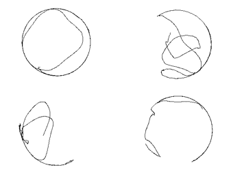

The locomotive stimulation revolves around the two light-sensing eye spots connected to the nervous tissue cluster in which under a specific wavelength will stimulate planarian’s movement; a recent report has demonstrated that planarians will change in behavior and experience light phototaxis depending on the wavelength of light utilized.

Hypothesis
Using such characteristic, we can measure the locomotor behavior in response to constant light exposure and constant wavelength thus giving us a controlled behavior to differentiate between locomotor activity under different drug conditions.


For more detailed Standard of Procedure please check the Thesis Section
Multi-Channel System
- Increase Concentration and sample size will help to develop precise dosage response base on locomotion
- Comparative Analysis is now possible in real-time
Computer System Specification
- OS: Windows 10 64bit
- CPU: Intel® Core™ i7-6700 4.0GHz
- HD Graphics 530 Intel® H110
- Memory DDR4 2133MHz 8G
- Storage 2TB SATA Hard Drive (7200RPM) Hybrid 8GB SSD
- Power Supply 300W
Lightbox System Specification
- Cherry wood exterior
- Pull out top shelf
- Exchangeable bottom plank
- Four HD Cameras
- 30 frames per second
- 15 megapixel
- Adjustable focus and zoom
- Light Source: LED Panel
- Dimension: 15.63” x 11.81”
- Active area: 13.78” x 9.84”
- Color temperature: 8000K10000K
Initial Recording
The video was acquired using a USB plug and play HD Camera that has 15 megapixels, 1280x960 resolution, and records at 30 frames per second. Resulting video files were converted into image stacks using virtualdub64 software (http://virtualdub.org/)with appropriate program plug-ins and further processed using ImageJ software. In ImageJ, file sizes were reduced by changing the file type to 8-bit and resizing the images to 640x480 resolution.
Background Homogenization
The image is then modified with Zprojection function at maximum intensity and using the original image to create stack and difference images by using Image Calculator function. The resulting image stack was then modified to a different threshold using the “maximum entropy” preset
Coordinates Tracking
MTrack2 plugin (Nico Stuurman) was used to track the worm mass centroid over time. The plugin successfully tracked all animals in the petri dish, and overall frames for greater than 95% of animals tracked. For falsely identified tracks (e.g., solution bubbles) the data was manually analyzed. Only data from the object tracked over the duration of all frames in the image stack and visually identified as the animal were used, or the parameters of the plugin were adjusted only to detect the animal and reprocessed.
Path Pattern
For each trial the distance traveled in centimeter for 5 minutes under each condition was calculated using the resulting MTrack2 plugin of x and y coordinates. Macros were created to automate the image processing that both reduced bias in the locomotor activity analysis and overall analysis time. Resulted tracking pixel distance was first converted to distance in centimeter then divided by time to obtain velocity.